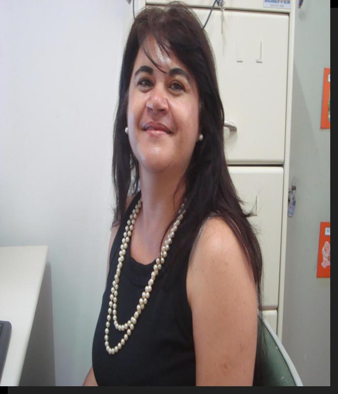

Leitura e Produção De Textos
Considerando que a leitura é uma construção ativa dos sentidos, este curso justifica-se pela necessidade incessante de se (re)pensar o ensino da leitura e da escrita e seus processos de aprendizagem nos ensinos fundamental e médio.
Ler ultrapassa a necessidade de busca de informações, muito menos fica no campo do passatempo, mas leitura, como diz Cecília Meireles, é nutrição. Muitas vezes, o professor anseia por novas metodologias de ensino dessa atividade que é fator principal para a construção dos sentidos; dessa forma, atualizar-se em teorias e metodologias é o papel do professor contemporâneo atuante. Por isso, esse curso se faz necessário, para oferecer ao professor subsídios teóricos e metodológicos para o trabalho com leitura e escrita na sala de aula, nos ensinos fundamental e médio.
As novas tecnologias, um dos pilares deste curso, constituem-se como ferramentas indispensáveis para o aperfeiçoamento do professor. Outro ponto de sustentação para as discussões e práticas propostas por este curso é o pressuposto de que não há conhecimento neutro, não há disciplina que se aprenda isolada de outros conteúdos. Por isso, além das disciplinas exigidas para o funcionamento do curso, há também disciplinas que contemplam diferentes lugares teóricos para o ensino e a aprendizagem da leitura e da escrita, que levam em consideração as diversas formas de se falar e de escrever no Brasil, de acordo com os diferentes sujeitos envolvidos no discurso, a finalidade da escrita e as questões ideológicas que cerceiam todos os dizeres e, consequentemente, todos os sentidos (ditos e interditados)
A estrutura do curso aqui proposto tem a pretensão de produzir reflexões e discussões acerca das práticas pedagógicas dos professores cursantes, seus objetivos de ensino, suas atividades, formas de avaliar, seu trabalho em sala de aula, a participação (ou não) dos alunos nas atividades realizadas em sala e outros fatores que envolvam contextos significativos de ensino/aprendizagem.

Trabalhos Desenvolvidos
Resenha
Controle de Irrigação de Orquídeas com Sistema Wi-Fi Residencial com Arduino, artigo científico escrito por Fabiana Pupin Masson Caravieri e Larissa Sanitá Mirinel Ortega, para UNESP São José do Rio Preto Faculdade Julio Mesquita Filho, como requisito da disciplina de Mestrado.
O objetivo foi desenvolver um sistema de irrigação por Wi-fi, pois as pessoas, em sua maioria, não tomam os devidos cuidados com elas pois vários fatores como: estudo, trabalho, viagens contribuem para a falta de cuidado. Organizado em 6 páginas e cinco tópicos, a saber: Introdução, Fundamentação Teórica, Abordagem Proposta, Resultados e Conclusão.
No primeiro tópico Introdução, vem dizendo sobre o trabalho que virá ser executado, que é a irrigação correta nas orquídeas evitando excesso ou escassez que pode causar sua morte. Fala também sobre os requisitos para o plantio dela o que usar e onde ela dá na natureza. Ela também usa de imagens para ajudar nas explicações. Fala também que não existe regra especifica para essa irrigação e por não terem tempo as vezes as pessoas não cuidam dela de maneira adequada.
Já no tópico de Fundamentação Teórica, ela fala que arduino é uma plataforma física de código aberto, conectada a um hardware que compreende tudo ao seu redor com a ajuda de sensores com luzes, motores e outros atuadores, e ainda com micro controladores programados na linguagem de programação e no ambiente Arduino. Os projetos com Arduino comunicam-se através de softwares em um computador, as placas podem ser construídas a mão, já montadas e pode-se baixar o software online gratuitamente. Neste Projeto utiliza-se sensores físicos que usa impulsos elétricos para dar o retorno, podendo ser também sensores químicos sendo analógicos ou digitais, os sensores desse projeto são de solo para medir a umidade do solo higrômetro e outro sensor para o ar usado também para medir umidade e outras condições climáticas. Utilizou-se também a investigação de uma estratégia alternativa para usar a utilização de sensores para o solo desta vez em pomares de citros irrigados por micro aspersão, verificando também a quantidade de água pela variação elétrica do solo, os sensores devem ser precisos porque a qualquer sinal de solo seco a irrigação é iniciada. A irrigação é necessária devido aos períodos de seca onde a ela vai dar as condições certas para continuar a produtividade. Nesse estudo foi efetuado a irrigação do feijão em dois tipos de solo, um arenoso e outro argiloso, usando sensores para o solo, para a luminosidade e para a temperatura, obtendo assim a informação de qual solo será mais vantajoso o cultivo com a ajuda do Arduino, a irrigação com aspersor spray framejet obteve melhor resultado pelo fato de que ele é estático e aberto, com baixa manutenção, fácil fixação com a pressão da agua sempre estável. A agricultura de Precisão tem como vantagens o aumento do retorno econômico, a sustentabilidade, a minimização do efeito ao ambiente, otimização do manejo e a monitoração, desta forma dando todo o retorno esperado.
No tópico Abordagem Proposta ela demonstra os recursos utilizados para irrigação automática, sensor de umidade de solo, temperatura e umidade do ar, entre outros dispositivos; faz essa explicação através de uma tabela. Explica também como funciona o processo de captação dos dados e para onde eles vão, utiliza de imagens para demonstração.
No seu tópico Resultados, a pesquisadora durante praticamente três meses realizou-se testes com dois tipos de plantas orquídeas, uma plantada em um vaso de barro e a segunda em um vaso de plástico, onde os sensores das condições do solo ficariam bem próximos a raiz, os testes foram realizados em Jales onde o clima é seco e com temperaturas quase sempre acima de 25 graus e a umidade relativa do ar sempre por volta de 35%. Se a umidade do solo estiver acima de 600 e a do ar acima de 36, o Arduino ativa a irrigação e quando a umidade ficar inferior a 450 a irrigação é pausada, o tempo para a irrigação das plantas é de três minutos e a quantidade de agua é de 50ml por vaso. Ainda pode se observar que a planta do vaso de barro adoeceu devido o vaso ter absorvido parte da água da planta e assim teve um excesso de agua, já a planta do vaso de plástico além de se manter saudável produziu novos brotos.
Para finalizar, na Conclusão, ela comprovou que a irrigação de plantas ornamentai é viável, e que conseguiu detectar as falhas, a hora correta de efetuar a irrigação, e foi além detectou também que o vaso também influencia no cultivo.
Concluímos que esse estudo se fundamentou em tecnologias acessíveis, que seus cultivadores terão um rendimento maior e a orquídea terá sua vida prolongada, assim, as pessoas terão menos trabalho e não terão preocupação em irrigar. O artigo foi bem estruturado com textos e imagens, do passo a passo dando base ao leitor de como fora executado esse projeto que unifica a tecnologia com a natureza, trazendo benefícios para ambas as áreas.
Produzido por Murilo Castello e Kaik Santos